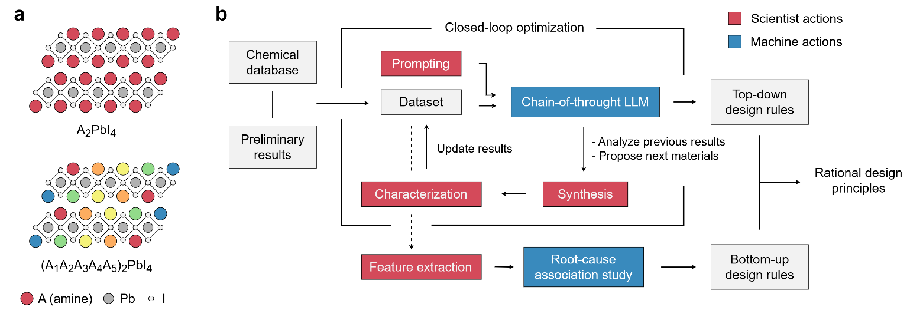
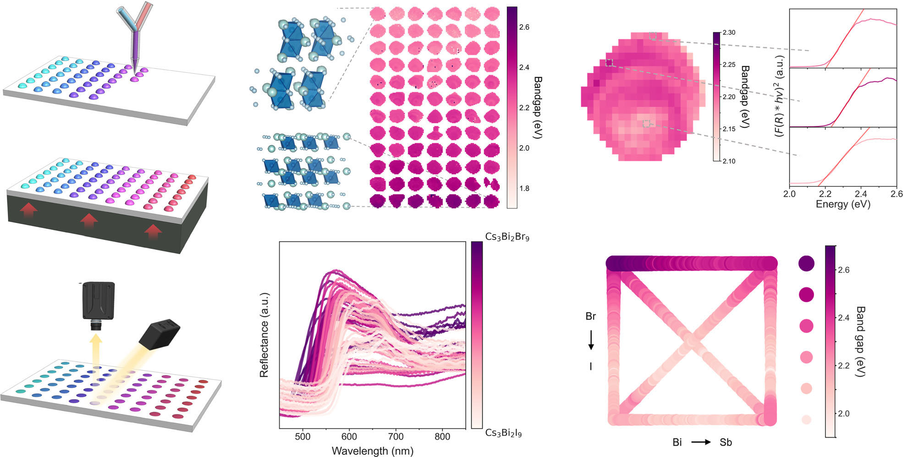
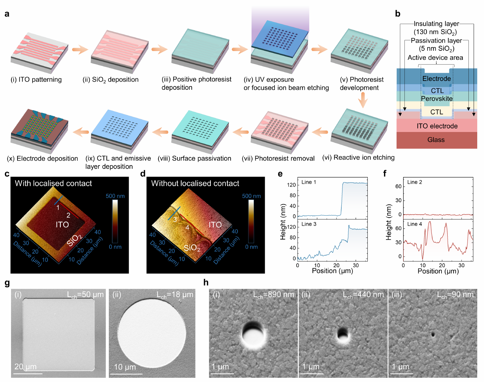
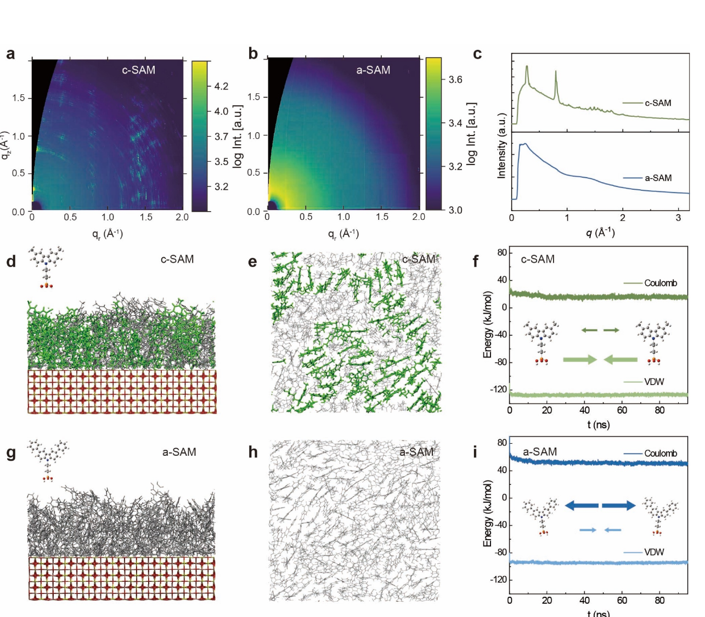
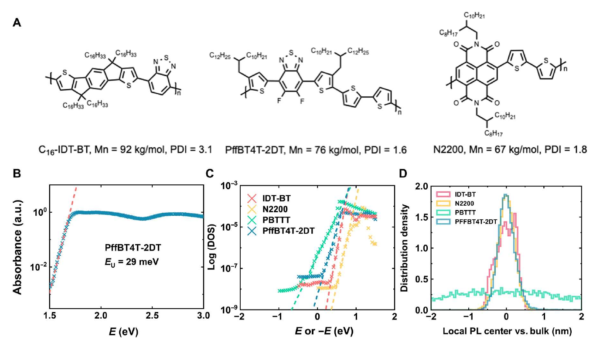

Disentangling environmental effects on perovskite solar cell performance via interpretable machine learning
T Liu, N Evans, K Ji, R Lee, A Zhu, V Nguyen, J Serdy, EM Wall, Y Lu, ...
ACS Energy Letters 11 (2), 1609–1617
PUBLICATIONS
Imaging, machine learning, and materials research.
01 / RESEARCH AREA
Self-supervised and multimodal learning, interpretable models, and hypothesis-driven experiments.

T Liu, N Evans, K Ji, R Lee, A Zhu, V Nguyen, J Serdy, EM Wall, Y Lu, ...
ACS Energy Letters 11 (2), 1609–1617
K Ji, Z Chen, Z Niu, A Mo, Z Qin, K DeCamp, C Wang, W Xu, JM Young, ...
Computers and Electronics in Agriculture 251, 111971
AE Siemenn, B Das, K Ji, F Sheng, T Buonassisi
Science Advances 11 (27), eadw7071
B Das, K Ji, F Sheng, KM McCall, T Buonassisi
Faraday Discussions 256, 587–600
K Ji, F Sheng, T Liu, B Das, T Buonassisi
arXiv:2505.09536 · Preprint
K Ji, T Liu, F Sheng, S Tan, M Bawendi, T Buonassisi
arXiv:2509.18604 · Preprint
K Ji, W Lin, Y Sun, LS Cui, J Shamsi, YH Chiang, J Chen, EM Tennyson, ...
Nature Machine Intelligence 5 (11), 1225–1235
M Roberts, D Driggs, M Thorpe, J Gilbey, M Yeung, S Ursprung, ...
Nature Machine Intelligence 3 (3), 199–217
02 / RESEARCH AREA
Multidimensional imaging, spectroscopy, and the local structure–property relationships of materials.

D Guo, TA Selby, S Kahmann, S Gorgon, L Dai, M Dubajic, TCJ Yang, ...
Nature Nanotechnology 20 (12), 1771–1778

2025
F Sheng, K Ji, L Dai, AE Siemenn, E Aissi, H Kavak, B Das, T Liu, S Sun, ...
Nature Communications 16 (1), 7477
K Ji
University of Cambridge · Doctoral thesis
EM Tennyson, M Abdi-Jalebi, K Ji, JL Garrett, C Gong, AA Pawlicki, ...
Advanced Materials Interfaces 7 (17), 2000515
C Stavrakas, SJ Zelewski, K Frohna, EP Booker, K Galkowski, K Ji, ...
Advanced Energy Materials 9 (35), 1901883
03 / RESEARCH AREA
Perovskite emitters, nanocrystals, and LED efficiency, colour, stability, and miniaturization.

J Zhou, M Zhu, S Tu, K Ji, T Tian, L Dai, S Han, Y Zhai, Y Qi, Y Cui, Z Li, ...
Matter 9 (7), 102769
Y Lian, Y Wang, Y Yuan, Z Ren, W Tang, Z Liu, S Xing, K Ji, B Yuan, ...
Nature 640 (8057), 62–68
2025
J Chen, K Ji, L Dai, H Xiang, Z Yu, AN Iqbal, J Wang, X Ma, R Guo, ...
Nature Communications 16 (1), 3621
L Kong, Y Sun, B Zhao, K Ji, J Feng, J Dong, Y Wang, Z Liu, S Maqbool, ...
Nature 631 (8019), 73–79
X Luo, W Xu, G Zheng, S Tammireddy, Q Wei, M Karlsson, Z Zhang, K Ji, ...
Matter 7 (3), 1054–1070
Y Sun, L Ge, L Dai, C Cho, J Ferrer Orri, K Ji, SJ Zelewski, Y Liu, ...
Nature 615 (7954), 830–835
C Otero-Martínez, M Imran, NJ Schrenker, J Ye, K Ji, A Rao, SD Stranks, ...
Angewandte Chemie International Edition 61 (34), e202205617
K Ji, M Anaya, SD Stranks
Perovskite Photovoltaics and Optoelectronics: From Fundamentals to Advanced … · Book chapter
K Ji, M Anaya, A Abfalterer, SD Stranks
Advanced Optical Materials 9 (18), 2002128
J Shamsi, D Kubicki, M Anaya, Y Liu, K Ji, K Frohna, CP Grey, RH Friend, ...
ACS Energy Letters 5 (6), 1900
04 / RESEARCH AREA
Photovoltaic performance, charge transport, interfaces, and operational stability.

X Wang, J Li, R Guo, X Yin, R Luo, D Guo, K Ji, L Dai, H Liang, X Jia, ...
Nature Photonics 18 (12), 1269–1275
2024
J Zhang, XG Hu, K Ji, S Zhao, D Liu, B Li, PX Hou, C Liu, L Liu, ...
Nature Communications 15 (1), 2245
J Zhang, J Mcgettrick, K Ji, J Bi, T Webb, X Liu, D Liu, A Ren, Y Xiang, B Li, ...
Energy & Environmental Materials, e12595
B Li, J Deng, JA Smith, P Caprioglio, K Ji, D Luo, JD McGettrick, ...
Advanced Energy Materials 12 (48), 2202868
X Liu, T Webb, L Dai, K Ji, JA Smith, RC Kilbride, M Yavari, J Bi, A Ren, ...
Energy & Environmental Materials 5 (2), 670–682
E Ruggeri, M Anaya, K Gałkowski, A Abfalterer, YH Chiang, K Ji, ...
Advanced Materials 34 (36), 2202163
R Guo, D Han, W Chen, L Dai, K Ji, Q Xiong, S Li, LK Reb, MA Scheel, ...
Nature Energy 6 (10), 977–986
J Zhang, X Hu, H Li, K Ji, B Li, X Liu, Y Xiang, P Hou, C Liu, Z Wu, Y Shen, ...
Advanced Functional Materials 31 (37), 2104396
05 / RESEARCH AREA
Semiconductor transport and materials for electrochemical energy storage.

M Xiao, X Ren, K Ji, S Chung, X Shi, J Han, Z Yao, X Tao, SJ Zelewski, ...
Science Advances 9 (22), eadg8659
W Song, K Ji, A Aguadero, PR Shearing, DJL Brett, F Xie, DJ Riley
Energy Storage Materials 14, 324–334